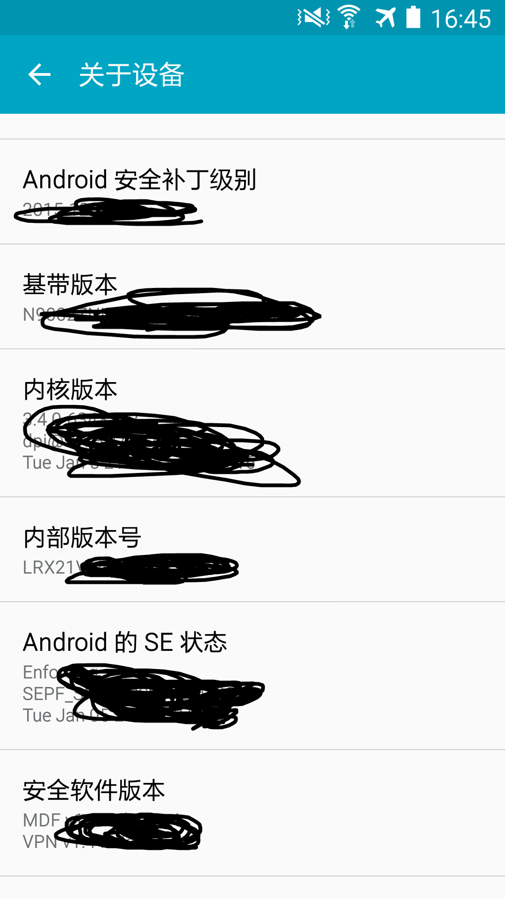

最近需要使用 Chrome Developer Tools 调试 Android 浏览器，但是官方指南并不是很好使，经过一番折腾，终于调试成功了，在此把经验分享给需要的朋友。
Chrome Developer Tools 是前端工程师必不可少的工具，它极大的提高了我们的开发调试效率。在移动开发的时代，我们也必须掌握手机浏览器在 Chrome 中调试的方法。本篇仅介绍 Android。
环境§
不同的环境可能存在一些差异，我的环境是：
- Windows 10
- 电脑 Chrome 50.0.2661.75 m
- Galaxy Node 3
- Android 5.0
- 手机 Chrome Dev 51.0.2704.10 （从豌豆荚下载的）
安装 USB driver§
首先需要安装的是 USB 驱动，虽说现在大部分操作系统都可以自动安装识别手机的驱动，但是如果要用于连上电脑调试，还是得手动安装一个，我安装的是：Samsung Andorid USB Driver for Windows
其他设备也可以在这里找到对应的驱动：OEM USB Drivers
启动手机上的开发者模式§
进入设置，找到开发者模式即可。但是 Android 4.2 之后的机器，开发者模式都被隐藏了，需要在关于设备中找到 Build Number，中文对应的可能是「内部版本号」，找到之后狂点它，过一会儿就会提示是否开启开发者模式了。

连接手机和电脑§
连接之后，如果手机弹框询问是否允许 Debug，点击允许之后，可以跳过以下安装 ADB Server 的步骤，直接进入最后一步。
如果手机上没有弹框，八成是没有启动 ADB Server，请接着往下看。
安装 ADB Server§
ADB 是 Android Debug Bridge 的简称，是 Android SDK Platform-tools 中的一个工具。根据这个 Stackoverflow 上的指南，可以只用安装 single ADB package。但是我遇到一些问题，于是我把整个 Android Studio 安装了，说不定以后要开发 Android 应用呢。
启动 ADB Server§
我是直接安装的 Android Studio，于是根据这个 Stackoverflow 上的解答，找到了 adb 的地址：C:\Users\<insert username here>\AppData\Local\Android\sdk\platform-tools\adb.exe
在 cmd 中运行
cd C:\Users\<insert username here>\AppData\Local\Android\sdk\platform-tools
adb start-server
即可。
Tips：重启电脑之后，如果还需要调试，得重新执行一遍 adb start-server。
在 Chrome 中调试§
打开电脑中的 Chrome，浏览器中输入 chrome://inspect，进入后勾选 Discover USB devices，就可以看到手机的 Chrome 上打开的页面了。
点击 inspect，会在新窗口打开一个 Chrome Developer Tools 的页面，即可以调试了。
Tips：手机上的原生浏览器也支持在 Chrome 中调试，但是看不到预览图。
Tips：电脑上打开的 Chrome Developer Tools 的页面，是根据手机上的 Chrome 版本生成的，所以可能和电脑上的页面有点不同。
这里我遇到一个问题，手机中如果安装的是 Chrome，则在电脑中一点 inspect 就会闪退。后来在手机中安装了 Chrome Dev 就好了。不清楚是哪儿的问题。
最后来一个成功的截图吧！